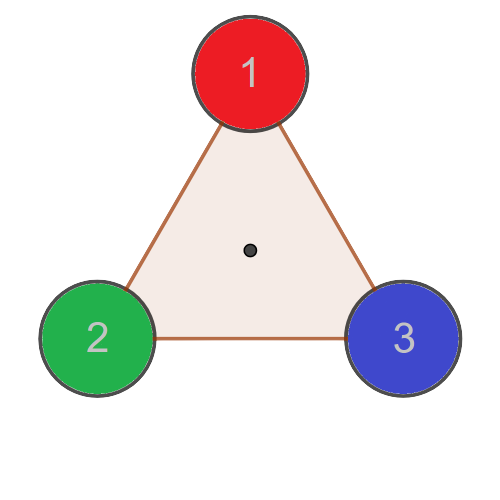

S3 is the symmetric group of {1,2,3}.
Instruction: Put the cursor on each triangle to see the animation.
|  |
The table below concludes all possible motions.
| e | r | r2 | s | sr | sr2 |
| \( \begin{pmatrix} 1 & 2 & 3 \\ 1 & 2 & 3 \end{pmatrix} \) | \( \begin{pmatrix} 1 & 2 & 3 \\ 2 & 3 & 1 \end{pmatrix} \) | \( \begin{pmatrix} 1 & 2 & 3 \\ 3 & 1 & 2 \end{pmatrix} \) | \( \begin{pmatrix} 1 & 2 & 3 \\ 1 & 3 & 2 \end{pmatrix} \) | \( \begin{pmatrix} 1 & 2 & 3 \\ 3 & 2 & 1 \end{pmatrix} \) | \( \begin{pmatrix} 1 & 2 & 3 \\ 2 & 1 & 3 \end{pmatrix} \) |
Meaning of each transformation:
The notation \( \begin{pmatrix} 1 & 2 & 3 \\ a_1 & a_2 & a_3 \end{pmatrix} \) is interpreted geometrically as follows.
Note: Some elements of S3 can be viewed in more than one ways. Put the cursor on each triangle to see the animation.
| r2 = \( \begin{pmatrix} 1 & 2 & 3 \\ 3 & 1 & 2 \end{pmatrix} \) can be viewed as | or | ||
| sr = \( \begin{pmatrix} 1 & 2 & 3 \\ 3 & 2 & 1 \end{pmatrix} \) can be viewed as | or | ||
| sr2 = \( \begin{pmatrix} 1 & 2 & 3 \\ 2 & 1 & 3 \end{pmatrix} \) can be viewed as | or |